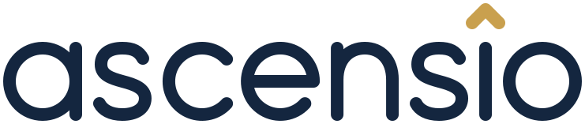
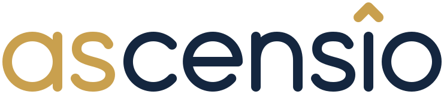
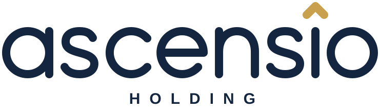
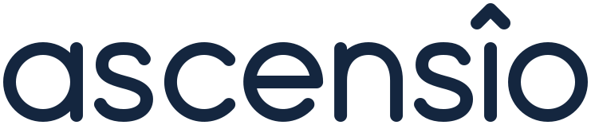
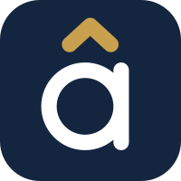
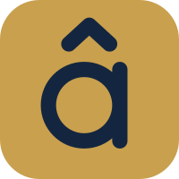

Zjednodušené logo Ascensio
Zachovali sme to, čo je na značke rozpoznateľné – zaoblené písmo, zlatú a tmavomodrú farbu. Odstránili sme to, čo komplikuje použitie: tenký ťah, dve farby v slove a podtitul „holding“. Nový prvok je zlatá šípka nad „i“ – ascensio znamená po latinsky vzostup.

Súčasné logo
- veľmi tenký ťah – v malej veľkosti (mobil, favicon) sa stráca
- dvojfarebné slovo + podtitul „holding“ = 3 prvky naraz
- „holding“ je pre uchádzačov o prácu nepodstatný

Nový návrh
- rovnaký zaoblený charakter, ale 2,5× hrubší ťah
- jedna farba slova + jeden zlatý akcent (šípka nahor)
- čitateľné od 16 px po billboard, funguje aj jednofarebne
Varianty
ascensio-logo.svg – na svetlé pozadie
ascensio-logo-white.svg – na tmavé pozadie, pätička
ascensio-logo-dvojfarebne.svg – zachováva zlaté „as“ z pôvodného loga
ascensio-logo-holding.svg – iba pre zmluvy a oficiálne dokumenty
ascensio-logo-mono-navy.svg – razítka, potlač, výšivka

ascensio-ikona.svg – favicon, profilová fotka na sociálnych sieťachČitateľnosť v malých veľkostiach
Farby značky
Navy#14263F · hlavná farba
Zlatá#C9A04E · akcent, tlačidlá
Tmavá navy#0C1A2E · pätička
Piesková#F5F2EB · pozadie sekcií
Tmavá zlatá#8B6B25 · zlatý text na bielom
Písma webu: Archivo (nadpisy) a Inter (text) – obe bezplatné, s plnou podporou slovenskej diakritiky.
Prečo takto
Poznámka: ide o pracovný návrh. Pred tlačou (vizitky, polepy áut, oblečenie) odporúčame dať logo grafikovi previesť do krivkových súborov (AI/PDF) a doladiť optické medzery medzi písmenami.